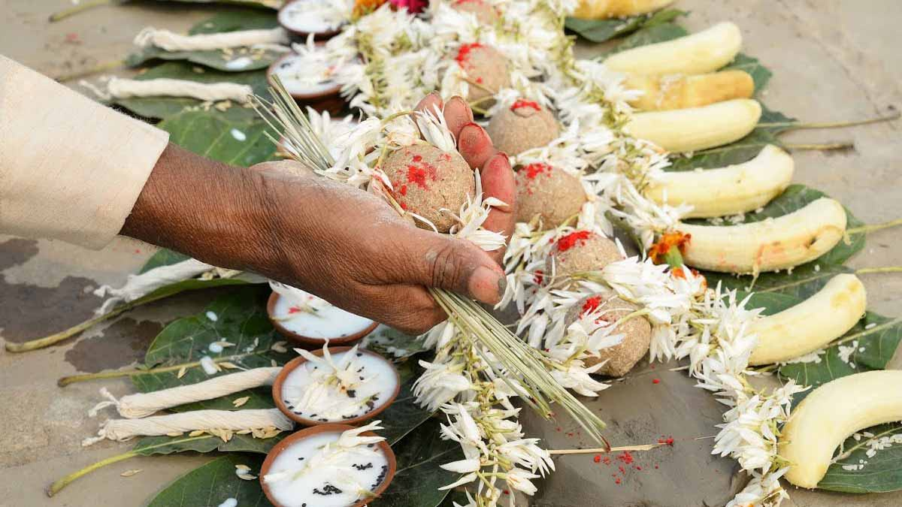
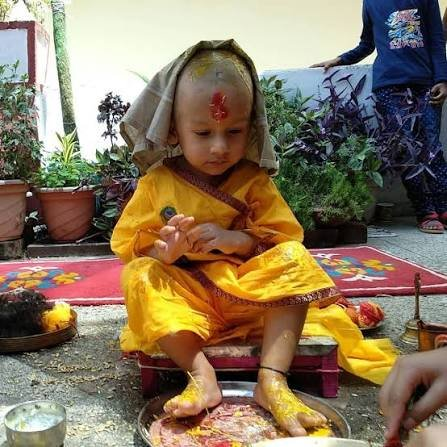
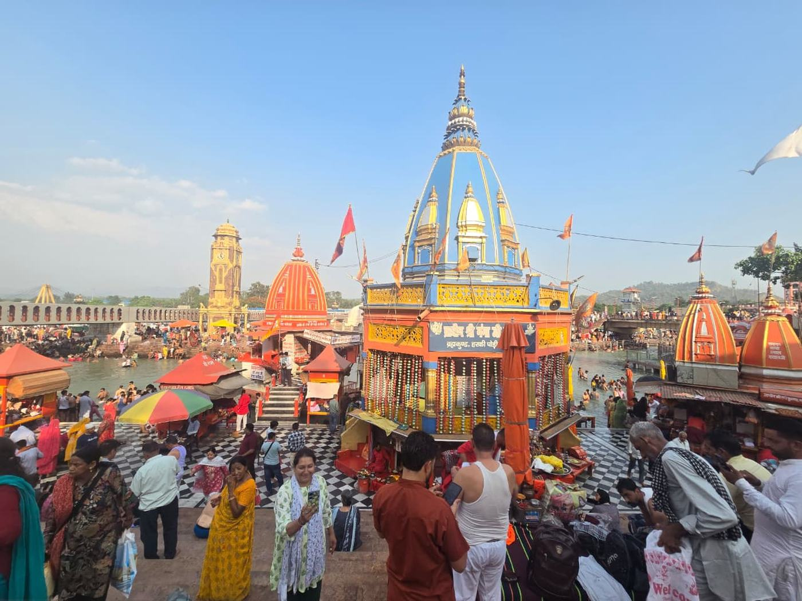

Pind Daan, Asthi Visarjan, Ganga Aarti, Mundan Sanskar aur anya sabhi pooja — anubhavi Tirth Purohit ke saath, poori shastriya vidhi se.
Neeche di gayi seva par click karke poori jaankari aur booking form dekhein.

Purkhon ki atma shanti ke liye vaidik vidhi se Pind Daan aur Shraddh karm.
Jaanein aur Book Karein →Maa Ganga me pavitra asthi visarjan, poori vidhi ke saath moksh ke liye.
Jaanein aur Book Karein →Har Ki Pauri par rozana pavitra Ganga Aarti — VIP darshan booking ke saath.
Jaanein aur Book Karein →
Bachche ka pehla Mundan Sanskar Ganga tat par shubh muhurat me.
Jaanein aur Book Karein →
Rudrabhishek, Satyanarayan Katha, Griha Pravesh, Navgrah Shanti aur bhi bahut kuch.
Sabhi Pooja Dekhein →Tirth Purohit Haridwar jaise pavitra tirth sthalon par peedhiyon se seva dete aa rahe brahman hote hain jo Pind Daan, Shraddh, Asthi Visarjan aur anya karm shastriya vidhi se karwate hain.
Haridwar ke Tirth Purohit peedhiyon purane vanshavali (genealogy) ke record rakhte hain jisme parivar, gotra aur purkhon ki jankari hoti hai — isliye har karm sahi vidhi aur poorn shraddha ke saath sampann hota hai.
Har karm Vedon aur shastron me batayi gayi vidhi se, poori shraddha ke saath karwaya jata hai.
Peedhiyon purane family genealogy records — gotra aur purkhon ki poori jankari.
Call ya WhatsApp par turant sampark karke apni date aur seva confirm karein.
Varsho ka anubhav rakhne wale Tirth Purohit jo poori vidhi khud sampann karwate hain.
Call ya WhatsApp (+91 86796 36172) par apni zaroorat batayein.
Pind Daan, Asthi Visarjan, Ganga Aarti, Mundan ya koi aur pooja — date aur samay confirm karein.
Nirdharit din Purohit ke saath Haridwar aakar poori shastriya vidhi se karm sampann karein.
Haridwar ke anubhavi Tirth Purohit se seedhe baat karein aur apni date confirm karein.